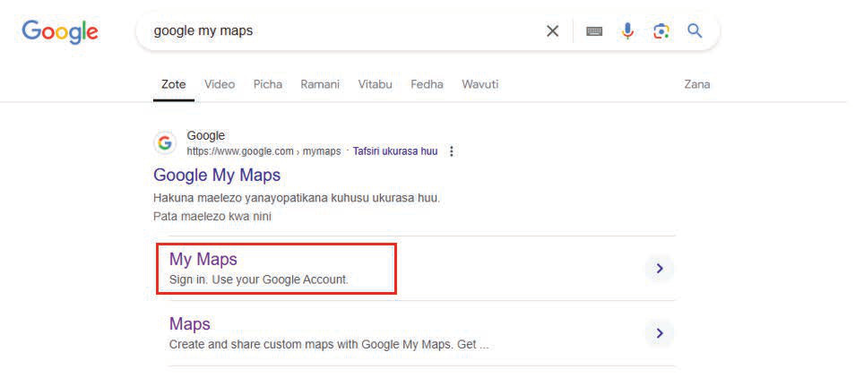

Maswali
- 1. Tumia uzi kukokotoa umbali wa kutoka Kilimani hadi Hekima.
- 2. Tumia kipande cha karatasi kukokotoa urefu wa reli.
- 3. Tumia bikari kukokotoa urefu wa mto Bariadi kutoka katika kilele cha mlima hadi Ziwa Gagadi.
Kupima umbali kidijitali
Pamoja na kubaini umbali wa vitu vilivyonyooka na visivyonyooka kwa kutumia njia za kawaida, pia tunaweza kubaini umbali kwenye ramani kwa kutumia njia za kidijitali. Hatua zifuatazo zinaeleza namna ya kutumia programu ya “Google My Maps” kupima umbali:
(a) Tumia kompyuta au simujanja kufungua tovuti ya Google, kisha tafuta “Google My Maps” na bofya “My Maps” kama inavyowasilishwa kwenye Kielelezo namba 21.

(b) Baada ya kufungua “Google My Maps”, tafuta eneo unalotaka kupima umbali kati ya vituo viwili. Kwa mfano, tutatafuta Munguri FDC kama inavyowasilishwa kwenye Kielelezo namba 22 ili kupima umbali kati ya Munguri FDC na shule ya msingi Munguri.